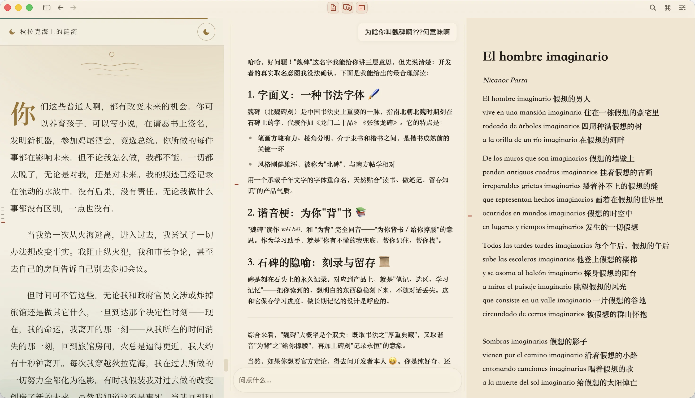

用魏碑读资料、问原文、记笔记
魏碑（weibei）是原生 macOS 阅读与笔记工作台。文稿、AI 对话与 Markdown 笔记可以并排放在一个窗口里，也可以单独展开。

阅读 PDF、HTML、Markdown 和纯文本
把资料文件夹导入为课程，打开文稿，并在课程资料中全文搜索。你可以用它阅读论文、课程讲义或收集的文章。扫描版 PDF 可以在 Mac 上识别文字；大文件可能会显示部分索引状态。
围绕选区提问，点击引用回到原文
选中一段文字，就能在保留文稿的同时提问。回答中的引用可以带你回到对应页码或小节；点击原文下划线也能重开相关对话，方便对照出处核实回答。
在阅读旁边编辑 Markdown 笔记
笔记支持图片、公式和代码块。阅读与写作不需要连接模型。请 AI 整理或修改笔记时，魏碑会先显示提案，由你审阅并确认后写入。
资料在本地，AI 按需接入
课程、笔记、搜索索引和学习记忆保存在本地。向在线模型提问时，相关摘录会发送给你选择的服务商；远程图片和网页内容也可能联网。你可以选择模型服务商、自定义 OpenAI 兼容接口，或本地 llama.cpp 模型。模型费用与隐私政策以所选服务商为准。
在 Mac 上开始使用魏碑
魏碑仍在开发中，支持 macOS 14 及以上的 Apple 芯片和 Intel Mac。可用安装包以 GitHub Releases 为准；没有可用安装包时，可以使用 Xcode Command Line Tools 与 Swift 5.9 及以上从源码运行，首次构建需要联网。
git clone https://github.com/WroughtMind/weibei.git
cd weibei
./script/build_and_run.sh- 导入自己的资料文件夹，打开一份文稿。
- 试试阅读、搜索，并在原文旁边写一份笔记。
- 需要 AI 时，在设置中连接模型，再选中文字提问。
关于这个项目
魏碑是 WroughtMind 下的项目。应用代码以 MIT 许可证开源，名称、标志、截图等品牌素材另有许可说明。你可以在 GitHub 关注开发，或通过反馈页提出建议。